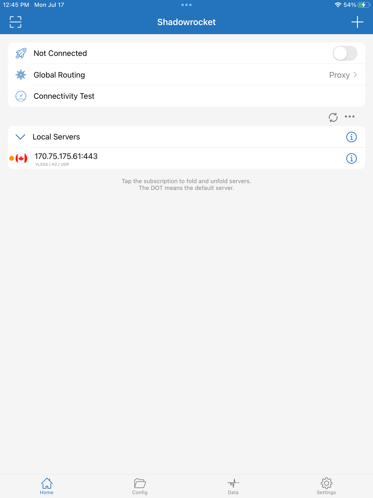
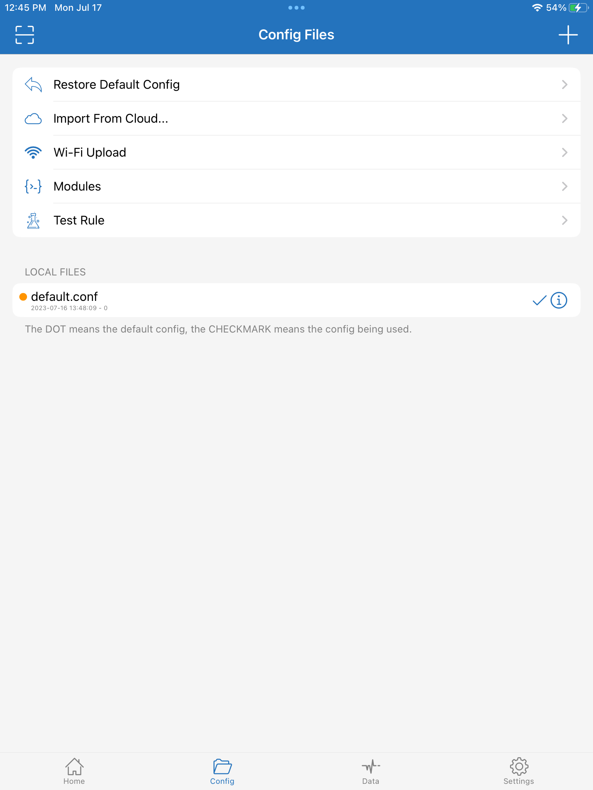
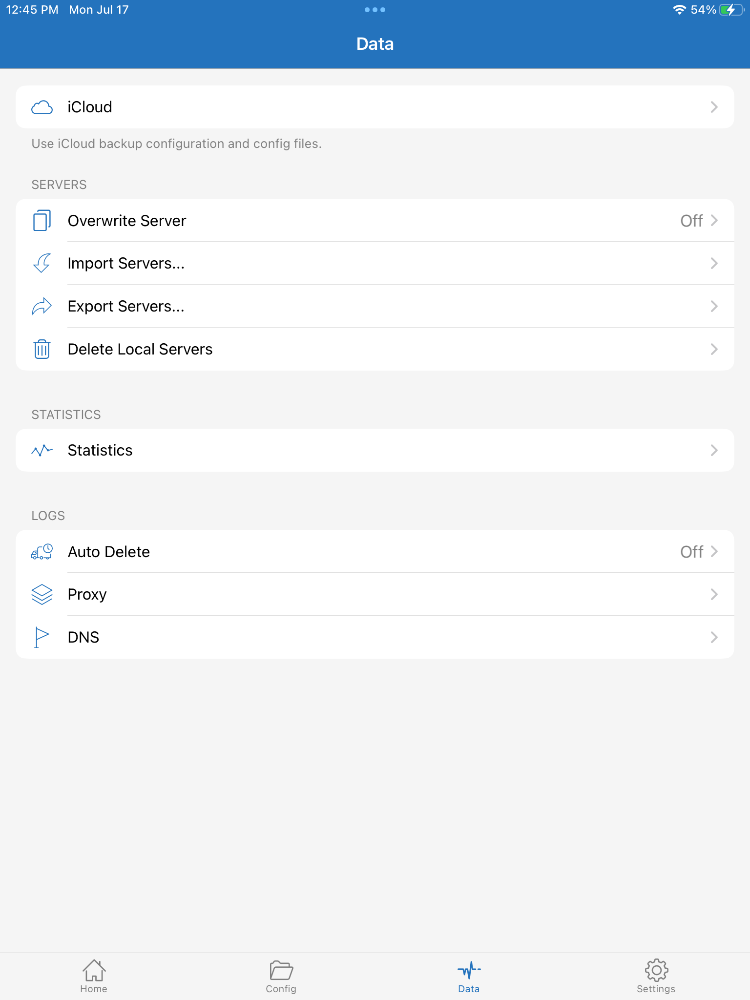
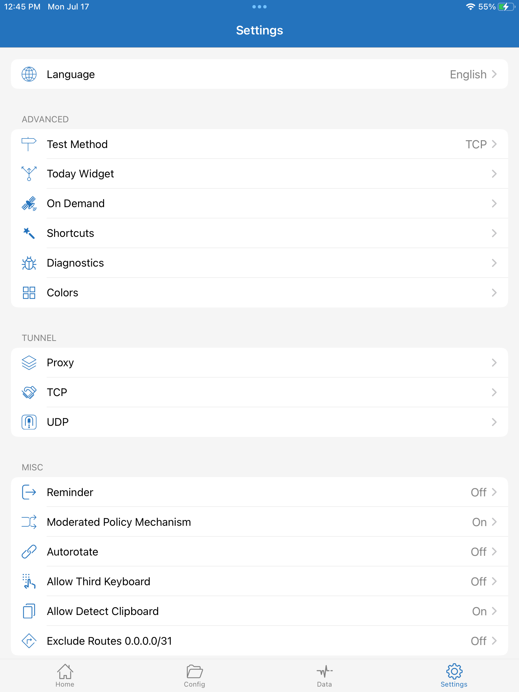

Xray Shadowrocket
Xray server
Install Xray-core on your server using the latest beta, and configure it to run as root:
bash -c "$(curl -L https://github.com/XTLS/Xray-install/raw/main/install-release.sh)" @ install --beta -u rootExample of a completed server configuration file /usr/local/etc/xray/config.json:
{
"log": {
"loglevel": "warning"
},
"routing": {
"domainStrategy": "IPIfNonMatch",
"rules": [
{
"type": "field",
"ip": [
"geoip:cn",
"geoip:private"
],
"outboundTag": "block"
}
]
},
"inbounds": [
{
"listen": "0.0.0.0",
"port": 443,
"protocol": "vless",
"settings": {
"clients": [
{
"id": "3b5390c5-52a2-472d-8dc2-103ef508be6c",
"flow": ""
}
],
"decryption": "none"
},
"streamSettings": {
"network": "h2",
"security": "reality",
"realitySettings": {
"show": false,
"dest": "www.lovelive-anime.jp:443",
"xver": 0,
"serverNames": [
"www.lovelive-anime.jp"
],
"privateKey": "QNraK6EdxPNOzfbL2G1BTl_OeMSxm49H5vps2qzQ3E0",
"shortIds": [
"77c2358dc476ae9e"
]
}
}
}
],
"outbounds": [
{
"protocol": "freedom",
"tag": "direct"
},
{
"protocol": "blackhole",
"tag": "block"
}
]
}
Restart xray systemd service with your final configuration file:
systemctl restart xraysystemctl status xrayShadowrocket GUI
There are four main pages in the Shadowrocket graphical user interface.
Home
Here you can scan a QR code or manually key in a server (Shadowsocks, ShadowsocksR, Subscription, Vmess, VLESS, GOST Relay, Socks5, Socks5 over TLS, HTTP, HTTPS, HTTP2, Trojan, Hysteria, TUIC, WireGuard, Snell, Brook, or Lua).
The main Connect toggle switch (ON/OFF) is on this page.
You can specify a Global Routing strategy (based on the configuration, always proxy, always direct, or scene).
There is also a Connectivity Test.
The remainder of this page is a list of your servers.
Config
Here you configure Shadowrocket (general, rules, hosts, URL rewrite, HTTPS decryption, script, and proxy group).
Data
Here is where you will find statistics and logs. You can also export and import configurations.
Settings
Here you can set things like test method, on demand rules, proxy port, and many other settings.
The languages available are English, Japanese, Korean, Simplified Chinese, Traditional Chinese, and Vietnamese.
Shadowrocket Xray client
Here is an example of a completed client configuration:

To route all traffic through the proxy server, specify a Global Routing setting of Proxy.

Shadowrocket JSON format for sharing
{
"host" : "YOUR.SERVER.IP.ADDRESS",
"file" : "",
"obfsParam" : "",
"alpn" : "",
"cert" : "",
"created" : 1689540948.871917,
"updated" : 1689541023.835876,
"tls" : true,
"mtu" : "",
"flag" : "CA",
"privateKey" : "",
"uuid" : "C5B9E453-C9F6-4EAB-8627-DA23EF7956BD",
"type" : "VLESS",
"downmbps" : "",
"user" : "",
"plugin" : "none",
"method" : "auto",
"data" : "",
"udp" : 1,
"filter" : "",
"protoParam" : "",
"reserved" : "",
"alterId" : "",
"upmbps" : "",
"keepalive" : "",
"port" : "443",
"obfs" : "h2",
"dns" : "",
"publicKey" : "eZfl07Tg9UII29GaS23QXqB15aqrJ4Khm0vKJIcaMCo",
"peer" : "www.lovelive-anime.jp",
"weight" : 1689540948,
"ip" : "",
"title" : "",
"proto" : "",
"password" : "3b5390c5-52a2-472d-8dc2-103ef508be6c",
"chain" : "",
"shortId" : "77c2358dc476ae9e"
}